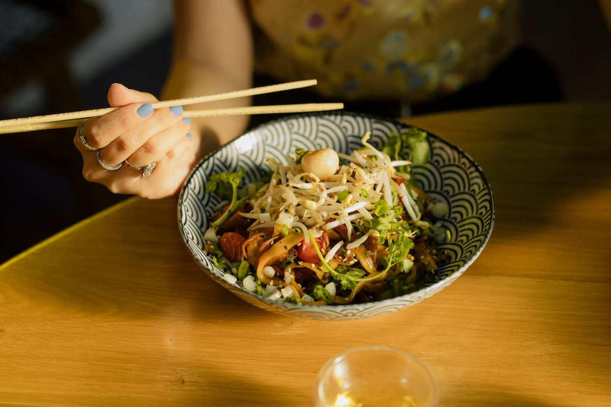
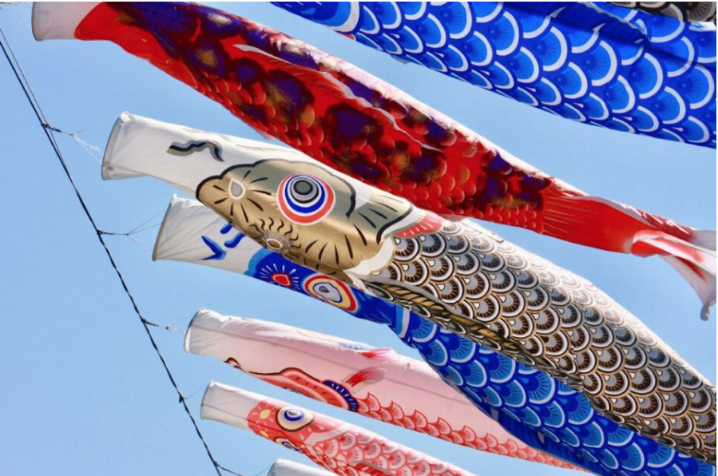
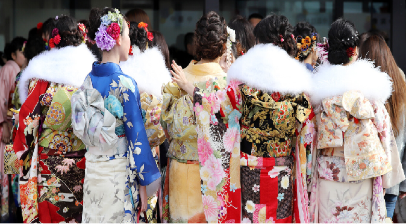
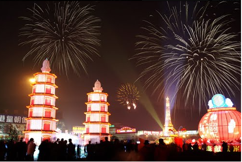
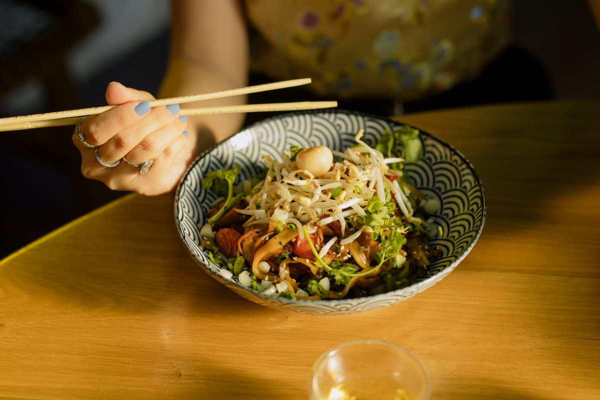
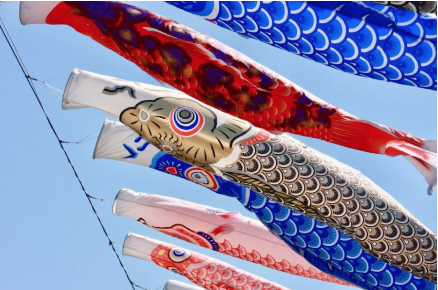
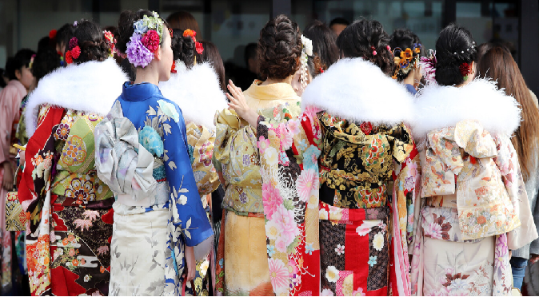
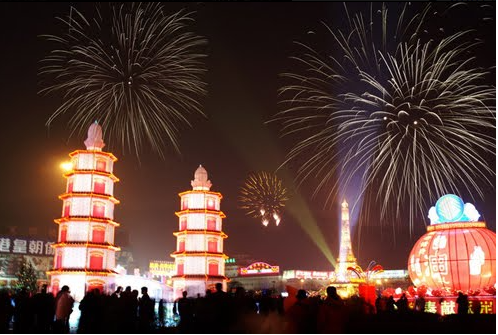
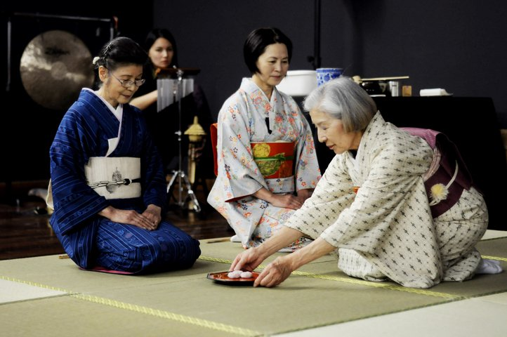
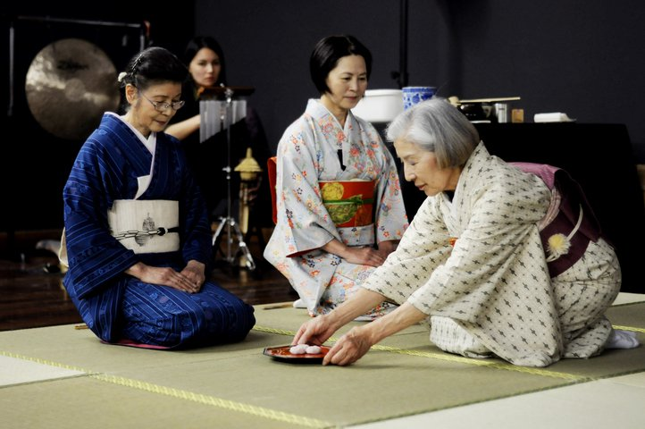

Tradiciones Japonesas
 







Ceremonía del té

 

Historia y Origen
China a Japón: El té llegó a Japón desde China alrededor del siglo IX, introducido por monjes budistas zen.
Desarrollo en Japón: Inicialmente usado para medicina y solo accesible a la nobleza, el té se convirtió en un ritual para fortalecer vínculos.
Sen no Rikyu: Este monje budista y maestro del té, del siglo XVI (periodo Azuchi-Momoyama), es considerado el fundador de la ceremonia del té tal como la conocemos hoy, simplificando la práctica y enfocándola en la espiritualidad zen.
Filosofía y Principios
La ceremonia del té japonesa se rige por los principios del budismo zen, que se manifiestan en cuatro virtudes fundamentales:
Armonía (Wa): Se busca el equilibrio en la decoración, los movimientos y el entorno.
Respeto (Kei): Se manifiesta el respeto hacia los invitados, el anfitrión y la naturaleza.
Pureza (Sei): Tanto la limpieza de los utensilios como la atmósfera deben ser impecables.
Tranquilidad (Jaku): La ceremonia invita a la paz interior, la contemplación y la atención plena.
Aspectos Clave de la Ceremonia
El té Matcha: El té verde en polvo es el protagonista, preparado con gran atención a cada detalle.
Los Utensilios (Chadougus): Herramientas especializadas se utilizan con movimientos precisos y estéticos.
El Espacio: La sala de té, con su decoración minimalista y a menudo rodeada de jardines, está diseñada para crear una atmósfera de tranquilidad.
El Anfitrión (Dōshu o Menjo): El anfitrión, con un título que certifica su conocimiento, ejecuta los pasos de la ceremonia con maestría.
Los Invitados: Los invitados participan activamente, con gestos específicos como girar el cuenco antes de beber para mostrar respeto.
Los Dulces (Wagashi): Se sirven dulces japoneses para mitigar la intensidad amarga del té.
Importancia Actual
La ceremonia del té sigue siendo una parte vital de la cultura japonesa. Es una forma de arte refinada y una oportunidad para la conexión personal y la apreciación de la belleza en la fugacidad y la singularidad de cada momento.
Kabuki y Teatro
El kabuki es una forma tradicional y estilizada de teatro japonés que combina drama, danza y música, surgida en el siglo XVII y reconocida como Patrimonio Cultural Inmaterial de la UNESCO. Se caracteriza por sus elaborados vestuarios y maquillajes (como el Kumadori), la interpretación de todos los papeles por actores masculinos (incluidos los femeninos por los onnagata) y un fuerte componente visual y corporal, que permite seguir la trama incluso sin conocer el idioma.
Bonsái y Jardines
Bonsái y Jardines se refieren al arte del bonsái, que consiste en cultivar árboles y plantas miniaturizados en macetas mediante técnicas de poda, alambrado y trasplante para recrear la escena de un paisaje natural. Los jardines de bonsái son colecciones de estos árboles en miniatura, que pueden ser expuestos en un jardín o balcón, o ser elementos decorativos en un diseño paisajístico más amplio